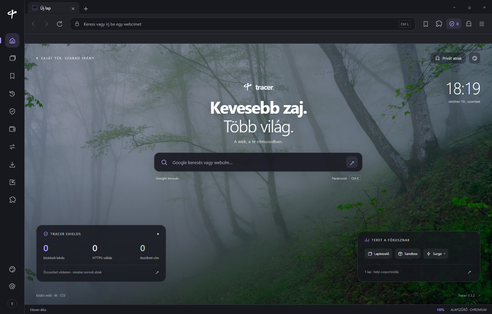

Osztott nézet
Két lap egymás mellett: jegyzet és videó, összehasonlítás, chat és munka. A csík húzható, egy kattintással bezárható.
Ahol a web újra a tiéd
A Tracer csendben elvégzi a webes háztartást: eltünteti a reklámokat, elutasítja a süti-ablakokat, megállítja a követőket, és elaltatja a lapokat, amikre most nincs szükséged. Neked csak az marad, amiért jöttél.

Alapból bekapcsolt védelem Chrome-bővítmények isReklámok, követők, süti-ablakok: a Tracer már betöltés közben kiszűri őket. A YouTube-reklámok el sem indulnak, a süti-ablakokat a böngésző elutasítja helyetted. Kapcsold ki, és nézd meg, mit szoktál meg.
Két lap egymás mellett: jegyzet és videó, összehasonlítás, chat és munka. A csík húzható, egy kattintással bezárható.
A rég nem nézett lapok elalszanak, és felszabadítják a memóriát. Az ikonjuk és a helyük megmarad.
A reklámok jellemzően el sem indulnak, a mégis megjelenőt a Tracer azonnal áttekeri.
A kész letöltést egyszerűen kihúzhatod az asztalra, egy mappába vagy egy feltöltőmezőbe.
Egy kattintással nyomtalanul törölhetsz, a Tor-ablak pedig külön, elszigetelt úton visz.
Könyvjelzők, előzmények és mentett fiókok áthozatala Chrome-ból, Brave-ből vagy Edge-ből, előnézettel, adattípusonként válogatva.
Chrome Web Store-bővítmények engedélyjóváhagyással, és saját válogatás a Tracer Store-ban.
A kezdőlap nem üres fehér doboz: válassz festett tájat vagy saját képet, színt, elrendezést. Minden háttérkép szabad felhasználású.
Válaszd ki az eszközöd. Előfizetés és regisztráció nélkül, a csomagokhoz ellenőrzőösszeg tartozik.
A teljes Tracer-élmény a számítógépeden.
Letöltés ellenőrzéseA kiadás adatai betöltés alatt.
Ellenőrzőösszeg · SHA-256 ↗Saját tér, amikor úton vagy.
Kiadás ellenőrzéseA mobilkiadás állapotát ellenőrizzük.
Ellenőrzőösszeg · SHA-256 ↗ Android telepítési útmutató ↗A következő fejezet még készül.
Letölthető, Apple által aláírt kiadás még nincs.
A legfrissebb csomagadatok betöltése…
A Tracer magától frissül: a letöltés a háttérben történik, a telepítés a következő bezáráskor, a lapjaid megmaradnak.
Nem találod a választ? Írj a készítőknek a lap alján lévő oldalakon.
Egy Chromium alapú, ingyenes böngésző Windowsra és Androidra. Beépített reklám- és követővédelemmel, süti-ablak-kezeléssel, osztott nézettel, alvó lapokkal, Tor-ablakkal és személyre szabható kezdőlappal érkezik.
Windows alatt telepítsd a Tracert az innen letöltött telepítővel. A Tracer Beállítások paneljén kattints a „Legyen a Tracer az alapértelmezett” gombra, majd a Windows beállításaiban válaszd a Tracert a HTTP és HTTPS hivatkozásokhoz. Androidon a Tracer beállításaiból nyitható meg a rendszer böngészőválasztója.
A védelem alapból aktív: hálózati szabályokkal szűri az ismert reklám- és követőkéréseket, és célzott webhelyvédelmet is alkalmaz. A webhelyek, különösen a videószolgáltatók folyamatosan változnak, ezért minden reklám eltűnésére nincs garancia. Ha egy oldal hibásan működik, a védelmet webhelyenként módosíthatod.
A kompatibilis csomagokat Chrome Web Store-hivatkozással vagy mappából telepítheted, engedélyjóváhagyás után. Az Electron motor Chrome API-támogatása részleges. A pontos kompatibilitási állapot itt olvasható.
Kattints jobb gombbal egy lapra, és válaszd a „Megnyitás osztott nézetben” lehetőséget: a két lap egymás mellé kerül. A középső csíkot húzva méretezhetsz, dupla kattintással középre áll. A lap helyi menüjéből zárhatod be.
A telepítő még nincs kódaláíró tanúsítvánnyal aláírva, ezért a SmartScreen ismeretlen kiadót jelezhet. A „További információ” majd a „Futtatás mindenképp” gombbal folytathatod; a letöltés ellenőrzőösszege a letöltési kártyán található.
Windows alatt a Tracer helyi Brave, Chrome és Edge profilokat, valamint kompatibilis exportfájlokat fogad. Az import előtt adattípusonként megtekintheted, mi kerül át. A bejelentkezési cookie-k és más böngészők titkosított jelszó-adatbázisai nem másolódnak át.
Lezárja a lapokat és letöltéseket, üríti a böngészőtárakat, a helyi előzményeket és a lapikonokat. A könyvjelzők, megjelenési beállítások, saját háttérképek, titkosított fióktár és a már lementett fájlok megmaradnak.